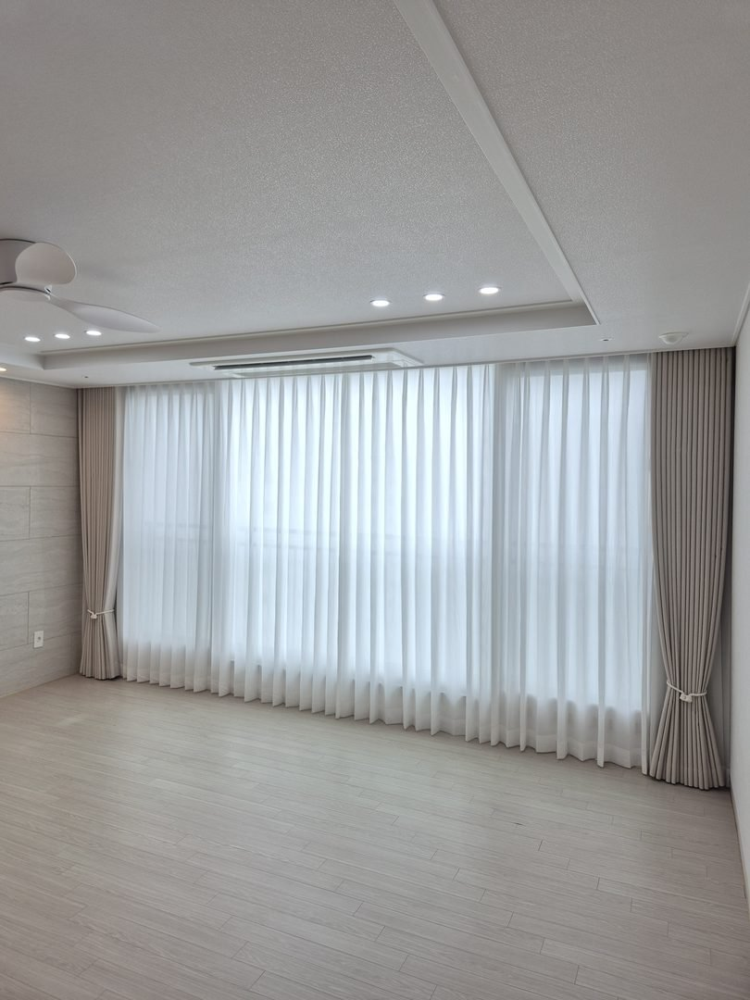
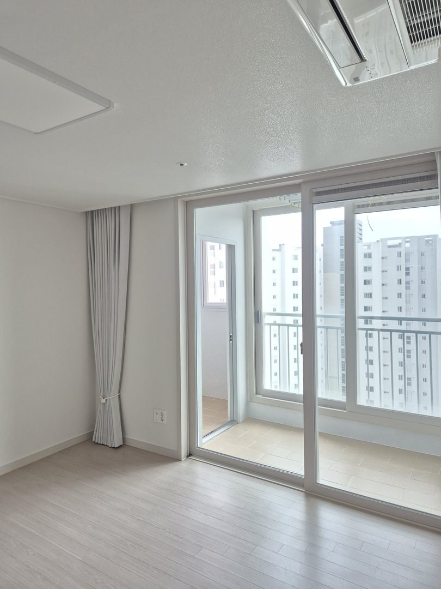
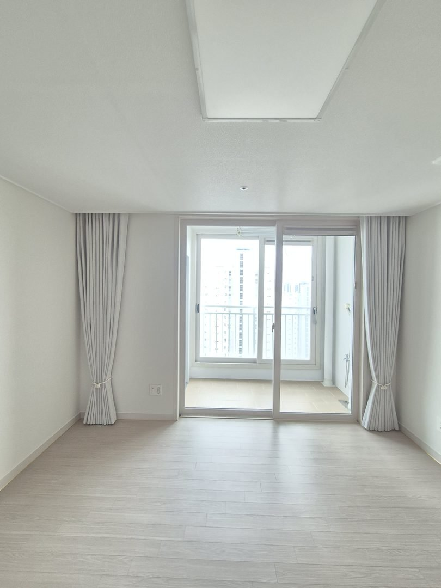
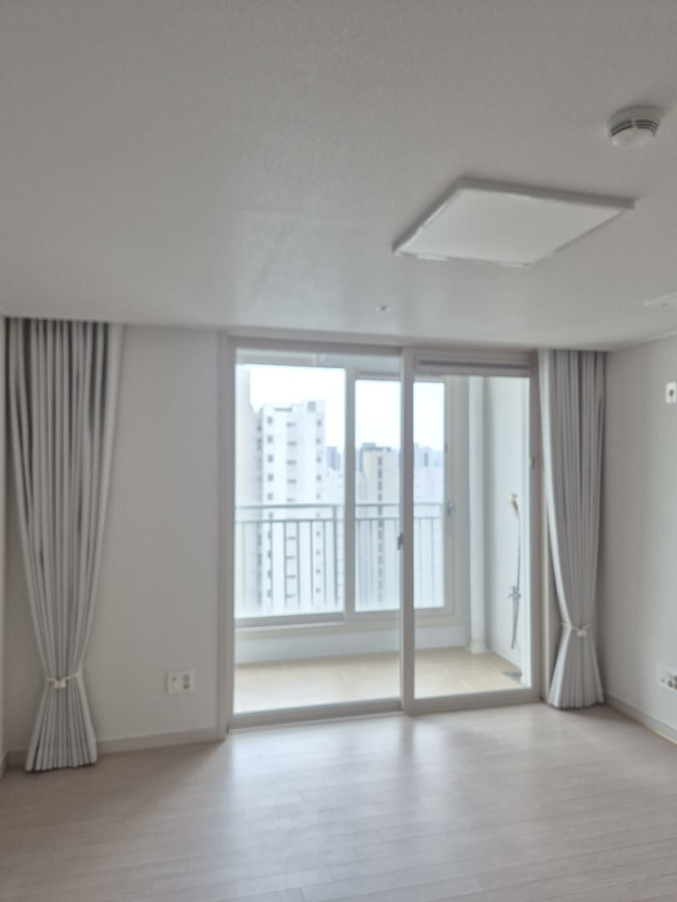
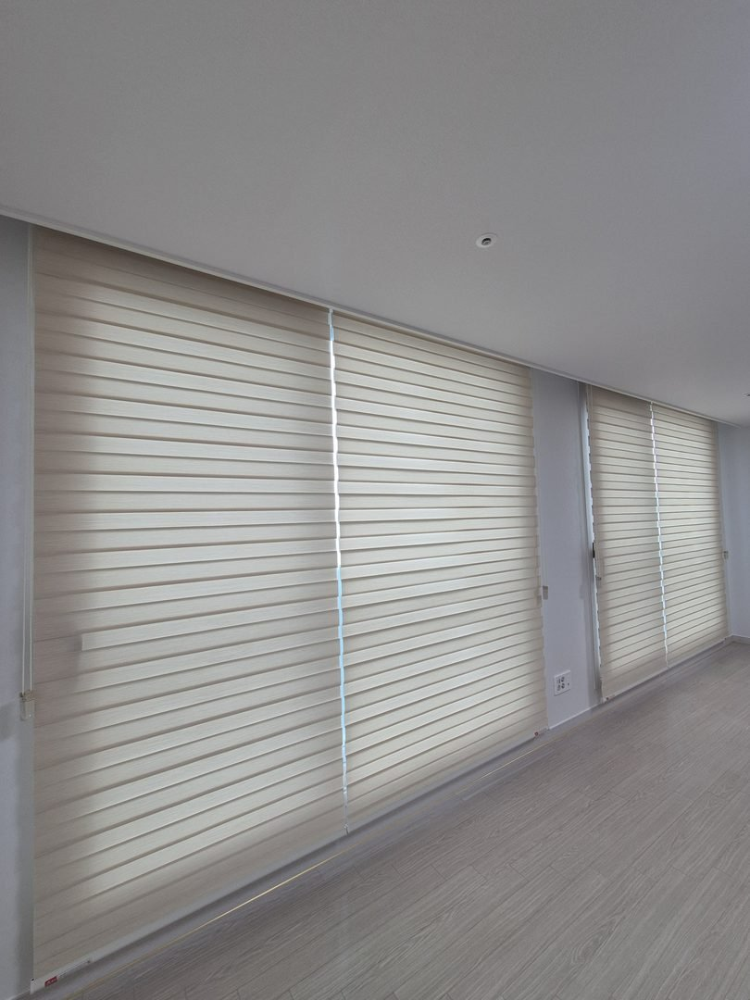

2026년 7월 28일 시공
포항 초곡 삼구트리니엔
거실 이중커튼 · 안방 암막커튼 · 콤비블라인드 시공후기

포항 초곡지구 삼구트리니엔, 입주 전 빈 집에서 하루 만에 끝낸 기록입니다.
안녕하세요. 포항을 포함한 경북 전 지역 커튼·블라인드 방문 시공 따솜커튼블라인드입니다.
창이 있는 자리가 네 곳이었습니다. 거실, 안방, 작은방, 그리고 드레스룸. 고객님이 처음 하신 질문은 "전부 같은 걸로 하면 더 싸지 않나요"였습니다.
싸지는 경우도 있고 아닌 경우도 있습니다. 이 집은 나누는 쪽이 맞았습니다. 그 이유부터 적겠습니다.
제품은 나누고, 색은 묶었습니다
같은 제품으로 통일하면 원단 한 종류를 넉넉히 재단하니 자재 단가는 내려갑니다. 대신 창마다 요구가 다른 집에서는 어느 한 자리가 반드시 손해를 봅니다.
거실은 낮에 빛을 들이고 싶은 자리, 안방은 확실히 어두워야 하는 자리, 드레스룸은 옷 색이 안 빠져야 하는 자리입니다. 요구가 이렇게 갈리는데 한 제품으로 묶으면 세 자리 중 두 자리는 아쉬워집니다.
그래서 제품은 네 자리에서 세 가지로 나눴습니다. 대신 색은 하나로 묶었습니다. 거실 암막커튼과 작은방 콤비블라인드를 같은 베이지 계열로 맞췄고, 안방은 백아이보리로 반 단계만 밝게 갔습니다.
집이 흩어져 보이는 원인은 제품을 섞어서가 아니라 색까지 같이 흩어놔서입니다. 색만 묶으면 방문을 열고 지나가도 창가 톤이 끊기지 않습니다.

거실 — 쉬폰과 암막을 겹친 이유
거실 창은 하루 종일 쓰는 자리입니다. 낮에는 밝아야 하고 저녁에는 바깥에서 안이 보이지 않아야 합니다. 한 겹으로는 이 두 가지를 동시에 못 합니다.
그래서 안쪽에 쉬폰 속커튼, 바깥쪽에 베이지 암막커튼을 달았습니다. 낮에는 암막을 양옆으로 묶고 쉬폰만 쳐두면 빛이 부드럽게 걸러져 들어옵니다. 밖에서는 실루엣이 안 보이고요.
저녁에 암막까지 닫으면 그때부터는 완전히 닫힌 거실이 됩니다. 하나의 창에서 세 가지 상태를 쓸 수 있는 셈입니다.
커튼 봉은 창 위가 아니라 천장 가까이 올려 달았습니다. 위쪽 빛샘을 막기 위해서이기도 하고, 층고가 실제보다 높아 보이는 효과도 있습니다.
안방 — 흰색인데 정말 어두워지냐고 물으셨습니다

가장 많이 듣는 질문입니다. 결론부터 말씀드리면 암막은 겉색으로 빛을 막는 물건이 아닙니다.
암막 원단은 겉으로 보이는 실 색과 별개로 안쪽에 차광 코팅층이 들어가 있습니다. 이 층이 빛을 막습니다. 그래서 겉이 흰색이든 남색이든 100프로 암막이면 원단 자체로는 빛이 통과하지 않습니다.
그럼 왜 "흰 암막 달았는데 방이 밝다"는 말이 나올까요. 원단이 아니라 가장자리 틈 때문입니다.

커튼을 창틀에 딱 맞춰 달면 창 위 벽과 커튼 사이가 열립니다. 아침 해는 각도가 낮아서 정확히 그 틈으로 파고들고, 천장에 반사돼 방 전체를 밝힙니다. 여름에 다섯 시 반쯤 저절로 눈이 떠지는 집은 대부분 이 경우입니다.
그래서 안방은 세 가지를 조정했습니다. 봉을 천장 가까이 올리고, 폭을 창틀보다 좌우로 키우고, 길이를 바닥 가까이까지 내렸습니다. 창 크기에 맞추는 게 아니라 창을 감싸는 크기로 갑니다.

밝은 색으로 간 이유도 말씀드립니다. 차광 성능만 보면 어두운 색과 큰 차이가 없습니다. 차이는 낮에 커튼을 걷었을 때 나옵니다.
어두운 색 암막은 걷어서 묶어둬도 그 뭉치가 방 안에서 시각적으로 무겁습니다. 벽과 붙박이장이 밝은 방이면 커튼 뭉치만 어둡게 남아 방이 좁아 보입니다. 백아이보리로 가면 걷었을 때 벽에 자연스럽게 붙습니다.
밤에는 완전히 어둡고 낮에는 방이 넓어 보이는 상태. 이게 이번 선택의 이유였습니다.

작은방 — 커튼 대신 콤비블라인드로 간 이유

작은방은 폭이 넉넉하지 않았습니다. 이런 방에 커튼을 달면 젖혀둔 원단이 창 옆 벽을 차지해서 방이 더 좁아 보입니다. 창틀에 붙는 콤비블라인드가 자리를 훨씬 덜 먹습니다.
원단 색은 거실 커튼과 같은 베이지 계열로 맞췄습니다. 재질도 형태도 다른 제품인데 색이 이어지니 방을 옮겨 다녀도 창가가 끊기지 않습니다.

창이 옆으로 길게 이어진 형태여서 하나로 통짜로 뽑지 않고 나눴습니다. 폭이 넓어질수록 통짜는 무게가 한 축에 다 실려 조작이 무거워지고, 한쪽만 걷어두는 것도 안 됩니다.
나누면 각 축이 가벼워져 조작이 부드럽고, 볕이 드는 쪽만 내릴 수 있습니다. 창틀 분할선과 맞아떨어지면 겉으로도 오히려 정돈돼 보입니다.
드레스룸 — 한 곳만 일부러 톤을 뺐습니다

집 전체가 밝은 톤인데 드레스룸에만 다크그레이를 넣었습니다. 이유는 두 가지입니다.
첫째는 실용입니다. 볕이 계속 드는 자리에 옷을 걸어두면 어깨선부터 색이 빠집니다. 짙은 남색이나 검정일수록 눈에 띄게 바래고, 가죽이나 니트는 색뿐 아니라 소재 자체가 상합니다. 밝은 원단은 빛을 반사해 방 안이 은은하게 밝아지는데, 옷을 보관하는 자리에서는 그게 오히려 손해입니다.
둘째는 시각입니다. 드레스룸은 문을 닫고 쓰는 독립된 방이라 톤을 따로 가도 집이 흩어지지 않습니다. 오히려 문을 열었을 때 안쪽이 차분하게 내려앉아 옷장 느낌이 납니다. 선반의 은색 프레임과도 잘 붙었고요.
톤을 뺄 거면 이렇게 문으로 구분되는 자리 하나만 빼야 합니다. 여기저기 빼면 그때부터 흩어져 보입니다.
시공에서 가장 손이 많이 간 자리이기도 합니다. 벽면을 따라 시스템 선반의 은색 세로 프레임이 창 옆을 스치듯 지나갔습니다. 브래킷 자리가 프레임과 겹치면 나사가 안 들어가고, 억지로 옆으로 밀면 헤드레일이 창 중심에서 벗어나 좌우가 다르게 보입니다.
브래킷 간격을 균등하게 나누지 않고 프레임을 피할 수 있는 위치로 옮겨 잡았습니다. 대신 옮긴 만큼 반대쪽 부담이 커지니 중앙에 하나를 더 넣어 처짐을 잡았습니다. 콤비블라인드는 원단이 두 겹으로 감기는 구조라 같은 폭의 롤스크린보다 무겁습니다.
나중에 전동으로 바꾸실 생각이라면
이번 집은 수동으로 갔지만 두 가지를 미리 잡아뒀습니다.
브래킷 위치를 전동 헤드레일이 들어올 여유가 있는 자리로 잡았습니다. 전동 제품은 안에 모터가 들어가 헤드레일이 수동보다 두껍습니다. 창틀 안쪽에 딱 맞춰 박아두면 나중에 바꿀 때 벽에 구멍이 한 번 더 납니다.
거실 커튼 봉을 천장 가까이 올린 것도 같은 맥락입니다. 전동 레일은 한쪽 끝에 모터함이 붙고 위쪽으로 배선이 지나가서 위 공간이 필요합니다. 전동화는 지금 안 하셔도 되지만, 지금 박는 구멍이 나중 선택지를 좁히지 않게만 잡아두면 됩니다.
시공 정보
지역 : 경북 포항시 북구 초곡지구 삼구트리니엔 (신축 입주 전)
공간 : 거실, 안방, 작은방, 드레스룸 (총 4개소)
제품 : 거실 쉬폰 속커튼 + 베이지 100프로 암막커튼 / 안방 백아이보리 100프로 암막커튼 / 작은방 베이지 콤비블라인드 / 드레스룸 다크그레이 콤비블라인드
포인트 : 거실 이중커튼 · 봉 천장 근접 설치 / 안방 창보다 넓은 폭과 바깥쪽 타이백 / 작은방 긴 창 분할 / 드레스룸 선반 프레임 회피 브래킷
작업 시간 : 1일
시공일 : 2026년 7월 28일
자주 묻는 질문
Q. 집 전체를 한 제품으로 통일하면 견적이 더 싸지나요?
자재 단가는 내려갑니다. 다만 창마다 요구가 다른 집은 어느 한 자리가 반드시 아쉬워집니다. 이번 집처럼 거실은 채광, 안방은 암막, 드레스룸은 옷 보호로 요구가 갈리면 나누는 쪽이 결과적으로 만족도가 높습니다.
Q. 흰색 암막커튼도 정말 어두워지나요?
됩니다. 암막은 원단 안쪽 차광 코팅층이 담당하고 겉면 색과는 별개입니다. 방이 밝다면 대부분 원단이 아니라 커튼 위쪽과 옆쪽 틈이 원인입니다.
Q. 커튼과 블라인드를 한 집에 섞으면 지저분해 보이지 않나요?
색까지 같이 흩어놓으면 그렇습니다. 제품이 달라도 같은 계열 안에서 한 톤 차이로 묶으면 창가가 이어져 보입니다. 이번 집이 그 방식입니다.
Q. 거실 이중커튼은 꼭 필요한가요?
낮에 빛은 들이면서 시선은 가리고 싶은 창이면 필요합니다. 한 겹으로는 열거나 닫거나 둘 중 하나만 됩니다.
Q. 창 옆에 붙박이장이나 시스템 선반이 있어도 블라인드가 달리나요?
대부분 달립니다. 브래킷 위치를 조정해야 해서 실측 때 그 부분을 같이 봅니다. 창만 찍은 사진으로는 판단이 어려우니 창 주변이 함께 나오게 찍어주시면 방문 전에 미리 확인할 수 있습니다.
Q. 포항 초곡지구도 방문 시공 되나요?
네. 포항 전 지역은 담당 실장이 직접 방문해 창을 보고 시공합니다. 경주, 안동, 영천 등 경북 동부도 같은 담당입니다.
마무리
네 자리를 하루에 끝냈습니다. 짐이 들어오기 전 빈 집이라 사다리와 공구를 놓기 편했고, 마감도 그만큼 깔끔하게 나왔습니다.
제품은 쓰임대로 나누고 색은 하나로 묶는다. 이번 집을 한 줄로 정리하면 그렇습니다. 통일해야 정리돼 보인다는 말은 반만 맞습니다. 통일해야 하는 건 제품이 아니라 색입니다.
비슷한 시공이 필요하신가요?
창 전체가 나오게 찍은 사진 한 장 주시면 방문 전에 견적을 알려드립니다.
부재 시 문자를 남겨주시면 빠르게 답변드립니다.